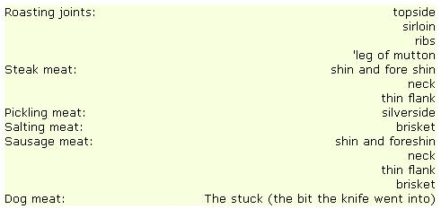
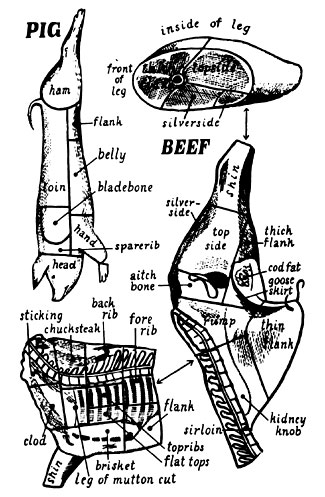

Copyright © 1973 by John and Sally Seymour. Introduction copyright © 1973 Shocken Books, Inc.
Ah, the vicissitudes of time. Two years ago, when there were NO currently relevant small-scale-farming introductory handbooks available, many of us welcomed the publication of Richard Langer's Grow It! with open arms. Now that we're all older and more experienced, however, some folks find it increasingly easy to criticize that breakthrough beginner's guide (see the Feedback sections of MOTHER NOS. 23, 24 and 25).
Which brings us to another breakthrough book that is just as important (probably more so) now as Grow It! was two years ago . . . and which may well come up for its share of criticism in another 24 months or so.0
Be that as it may, John and Sally Seymour's record of 18 successful years on a shirttail-sized homestead in England is important now and should offer welcome encouragement to today's back-to-the-landers . . . both real and imaginary. I started serializing the book in my No. 25 issue and I'm sure that many readers will want a personal copy for their home libraries.-MOTHER.
The running to the butcher's dally Is a ridiculous thing.
And a very expensive thing as well.
We send an ox a year to the slaughterhouse. The slaughterhouse charges about eight dollars to kill it but they pay us eight dollars for the skin so this doesn't cost us anything, but there is the carriage in there and the fetching of the meat back.
We could kill the meat here of course. I have killed several bullocks in Africa and shot and cut up many a wild buffalo which is almost exactly the same thing. But to kill an ox you need a clean airy building which is high enough to hang him up in, and the means for hauling him up. After all, a very big ox can weigh a ton. I know a farmer who gets the butcher to come and kill his bullocks for him, in his hay barn, and he hoists the carcase up with the fore-end loader of his tractor.
You can only consider killing an ox in the winter of course (in Africa the meat had to feed thirty or forty people so it didn't have to keep). And really the individual family can only consider killing, or having killed, an ox if there is a deep freeze. A family without one might conceivably cope with one quarter of an ox, so if there were four families in some sort of community, or at least in liaison with each other, and no deep freeze, an ox might be killed between them occasionally, but they would then have to salt a lot Salt beef is all very well but, like the sailors of old, one can have too much of it.
We kill our ox when he is too young to die. The reason for this is that if he were, say, a three-year-old ox he would be too big to go in our deep freeze. It would be far better if we had a neighbour who also wanted to kill an ox every year. We could then take alternate years to kill our ox, and let him grow to three years at least and four years preferably and fat him as a bullock should be fattened. The sort of two-year-old or eighteen -month -old 'beef' that is sold nowadays is not proper beef at all. If you ever do get a roasting joint from a well fatted four-year-old animal, hung until it is a deep red colour and has a proper beefy smell to it, and not over roasted, you will see what I mean.
I used to have a fairly rough and ready way of killing, skinning and cutting up a beast, but a butcher friend of mine has given me the following advice:
Shoot or humane-kill the animal in the brain.
Stick just in front of the breast bone (sternum). Cut just deeply enough to sever the main blood vessels and let the animal bleed-do not stick too deep. With the shot animal lying on the ground, stand near its throat with your back to it, push its head up with one leg and its forelegs down with the other, and cut just in front of the brisket. Cut in carefully and you will find that you have severed the main blood vessels.
Whatever you do don't cut into the chest cavity. The animal cannot kick you in its nervous post-mortem kickings because you are standing too near to it. (Catch the blood either for black puddings, or to mix with the pigs' mash, or to activate the compost heap.)
Chop off the horns and skin the head.
Cut the throat across the larynx; tie off the weasand (wind pipe) and cut through it and go on cutting to the occipital joint (the first vertebra) and cut the head right off.
Cut through the tarsals and carpals (the knee joints). With a little practice you can find them and cut through without having to use a saw or a chopper. Open up the gam cords ready for the gamble (see MOTHER NO. 29 under "Pig", pages 22-28).
Cut the skin right along the belly line without cutting into ,the abdominal wall. Skin the neck and the brisket and pull most of the hide off the belly but don't yet skin the fore shanks.
Insert the point of the knife gently through the abdominal wall just behind the brisket, shove your hand behind the knife so as to protect the innards from the knife, and cut right along centre line of belly to the cod fat (around the penis).
Remove the caul fat (the membrane to which the guts are attached). Empty the bladder (not over the meat!), split the buttock so that the bung, or arse-hole, can fall out, and tie the latter off (that means tie it with a piece of string so nothing can come out of it).
Saw through the breast bone (sternum) from the neck backwards. If you don't do this now, with the beast lying on the ground, you'll never do it later, for the guts will hang down and prevent you from doing it, and the guts can't come out until you have done it.
Insert the gamble and hoist the beast half off the ground.
Get the skin off the hind quarters and off the tail.
Hoist right up and the innards will fall right out.
Remove the liver carefully. Excise the gall bladder from it.
Cut the diaphragm away.
Haul out pluck (heart and lungs). Clean out chest cavity of odd bits and pieces.
Finish flaying. Haul the hide right off.
Split the carcase in two. (I would do this next day, but my friend didn't say so.)
Trim out all blood vessels, etc. Wipe it all down inside with a clean, warm, moist cloth.
You should treat the intestines as I recommended for pig's small intestines and salt down for big sausage casings (see MOTHER NO. 29).
There are four stomachs:
1. The rumen, or paunch, which is enormous. Open and clean it in a running brook, take it home, scald it with boiling water, scrape inside, put in brine for a few days. When you want it boil it and coot it in clean brine. Cut it up and cook it as you desire. Tripe, well seasoned and piping hot, is a dish very much too good for a king.
2. The reticulum, or honeycomb stomach. Do as above, and it is fine for Tripe Normandy, but this is not a cookery book.
3. The omasum, or 'Bible-bag'. Good only for the pigs.
4. The abomasum, or reed. Where, in a young calf, the rennet comes from. Open and wash and it is good for tripe. Or the dogs?
The hooves should be scalded, when you can pull the hard hooves off leaving 'cow heels'. These make 'calves-foot jelly', or are marvellous in brawn.
The suet, which is the dry crumbly fat inside the belly, should be kept for puddings, mincemeat, etc. All ordinary fat surplus to requirements as part of a joint can be rendered down for dripping.
Now we have the weighty job of jointing our beef. Here I would strongly advise you to get a butcher to help you, at least the first time that you cut up a steer. Get him to do it slowly, and label, whatever you do, the joints that he cuts out of it. I am not going to describe the indescribable: that is how to joint a side of beef. It cannot be conveyed in words. It cannot be conveyed in pictures either, for you are trying to depict a three-dimensional matter of great complexity on a two-dimensional piece of paper. See the drawing, however, and here-very important-is a list of what the various cuts should be used for:
Any of the stewing bits will make soup. While on the subject of soup, the deep freeze comes to the aid of the would-be disciples of Mrs. Beeton today. There is nothing in the world so nourishing as good 'beef stock'. In the small household of today we cannot have a stock pot constantly simmering over the fire. But we can boil up gallons of good stock all at once and freeze it. Simply boil it up for a long time, bones and all (bones especially), and all odd bits, cow heels too. Pour it off the bones and let cool. Take off fat. Reduce it some more if you like and freeze it into cubes in your ice-cube moulds, or pour into cartons, leaving 1/2" space at the top of the carton otherwise the stuff will expand over it. If you have a few dozen of these frozen blocks of beef stock in your freezer you can make the most magnificent soup whenever you want to, by simply throwing a block into the pot together with whatever vegetables or whatever you are making soup out of. Pour into a polythene bag and put that in a square carton to shape it first. Stock is one thing that does not deteriorate in the slightest in the deep freeze, provided you get all the fat off it first. It does not want 'thawing'-just throw the ice straight into the pot. Try one day cooking some soup like this and at the same time heating up some tinned or packeted soup, to compare them.
But back to our joints. There is method in it all: it is not just superstition. Steaks must be cut across the grain of tender muscle. Muscle that does a lot of work, like the silverside, is tough. Silverside is on the outside of the leg and takes a lot of stresses while the beast is walking about: therefore it is tough and gristly and not too good for roasting, but it is prime beef just the same. It just happens to be very good for pickling. To pickle it prick it over with a needle, rub it with saltpetre and brown sugar and let it stand for 24 hours. Then put it in the brine tub for 8 to 10 days.
The brine tub. Brine should be clean water and salt boiled and allowed to cool. The concentration of salt should be such that a potato should float in it. If the potato sinks you haven't got enough salt. Any meat will keep indefinitely in brine: it was brined beef that took Drake around the world. The brine tub should have a loose round board under the meat, traditionally with holes bored through it, and another such board on top of the meat with a stone on it to keep the meat down. Do not use a metal weight for this purpose ever. Dorothy Hartley in her great book (it will become a world classic in time and Will be read long after Mrs. B. has been forgotten) Food In England (Macdonald), is good on how to treat and cook salted meats.
If you must try to cut up your steer yourself, this is the order in which you should tackle it:
Forequarter: Cut off the brisket, then the ribs, then the 'leg of mutton'.
Hindquarter: Cut off thin flank; then sirloin, aitchbone, shank, thick flank; then separate the topside out; then the silverside. You have left the thick rump of flank. Cut the best of this for steaks and boil the rest.
Of course all beef is eatable (even the bit the harness rubbed against!) and if you hack at it in complete ignorance you will still get a great number of good meals. But you will be roasting what you ought to grill, and grilling what you ought to boil and all the rest of it. Your ox is a very valuable animal. You could sell him nowadays for nearly three hundred dollars. Surely it is worth the expense of having a butcher attend to him, or sending him to the municipal slaughterhouse and then bribing one of the butchers there to cut him up properly for you? If you do this, go to any trouble that it takes to label each joint, and when you put the joints in the deep freeze label them in such a manner that the labels do not come off and you can really read them. Otherwise you might as well be hacking into a frozen mammoth. Everything that goes into the deep freeze has to go in a closed polythene bag.
The stewing meat, and I should classify a lot of it as this if I were you, is far better cut up in small pieces before you put it in the deep freeze in polythene bags of a size suitable for making one good stew for you.
Potting is another way of preserving beef:
1. Lay it in salt for three days.
2. Wash the salt off.
3. Season with a pinch of saltpetre, herbs and spices.
4. Put some suet and butter on top of it.
5. Leave it in a slow oven all night.
6. Pour off the fat.
7. Cut the beef up small and put, hot, into a pot.
8. Press down tight and pour on top of it clear strained fat-very hot.
9. Cover with greaseproof paper when cold.
It will keep for a couple of months.
Fresh beef should be well hung before eating. Ten days in cold weather is not too much. The older the animal the longer the hanging-a fortnight for a four-year-old, if you ever have one.
Veal should be eaten within three or four days of slaughter though. But veal should be left to the French. We cannot afford to waste potential beef animals in that wanton manner, except a few to get rennet out of.
The tongue: soak in boiled, spiced, cold brine (with the silverside if you like). Leave it there for six days. Bake it in the oven. Skin it. Pot it and cover with clarified butter and/or suet as for potted beef.
Our ox keeps us lavishly in beef for a year.
We kill two or three sheep a year, and now that we have got the deep freeze it is a very easy business indeed. I shoot the sheep with the .22 (in Africa we used to stun him with the back of an axe), lay him on his left side and stick him just below and behind the ear. One should then break his neck by grasping his lower jaw with one's left hand, placing right hand over his poll and jerking upwards. I omit this part of the little ceremony because, with the .22 bullet, he is already as dead as mutton.
I then skin his legs and throat out, open his throat, tie off his weasand and then haul him up on the gamble.
Finishing skinning him (and as much as possible of this should be done with the fist-not with the knife: the hide should not be cut, nor should the meat, and large areas of fat and flesh should not be left sticking to the hide), I rip his belly from the brisket upwards, remove the caul, cut the bung loose and tie it off, remove the bladder and hulk the sheep-that is haul out his stomachs and guts. As you do so you must pull his food pipe through his diaphragm. Then split the breast bone, remove the pluck (liver, lights and heart), wipe him out inside with a clean, warm, wet cloth and put in a stick called a 'back set', which is to spread him open and let the air in. The large intestine can be used for sausage casings.
Hang him a week, but of course you can begin to eat bits and pieces before that-the liver of course the first day. In Africa I used to kill a sheep in the dry season, when the days were as hot as hell but the nights were freezing. I would hang the meat outside at night out of leopard reach, bring it in early in the morning and wrap it up in many sheets of newspaper. Like this I could keep it for a month.
While on the subject of Africa, I must here mention biltong. Biltong is salted and dried strips of buck meat or beef and it is almost worshipped by South Africans. Living in the back-veld of South West Africa, as I used to do, biltong formed an important part of my diet. If I shot a gemsbok or a kudu I would turn a very large part of it into biltong. I have made it in Wales since then, in fact I made some last year, out of beef, and it has been perfectly successful. The only drawback is you need prime cuts really; biltong made from odd bits of scrag end is not really much good.
But this is the way you do it. Cut lean meat up into strips, say an inch square but the longer the better, along the grain, or fibre, of the meat. This is most important: do not cut it across the grain. Lay it in dry salt for six hours. Wash the salt off it and hang it-if in southern Africa in the dry season-in the shade but in the breeze-if in the British Isles in the chimney. I leave mine in the, chinmey, in light smoke, for say three days, take it down, hang it up in the kitchen, and it is perfect biltong. It is as hard as hickory. To eat it you just pare or shred little shavings off the end of it across the grain with your Joseph Roger 'Lambsfoot' knife (old back-velders will know what I mean), put it on bread and butter, and it is delicious.
Rennet. If you kill calves you can make your own rennet, or you can make it if you cadge a few calf stomachs off a butcher. The calves must have been young suckling calves. The fourth stomach is the one you want and it is known, to rennet-makers, as the vell. Take your veil, or more if you have them, clean them with a cloth but don't wash them. Sprinkle dry salt on them and leave for a day or two or until they are needed. Then cut them into strips, put in water which should have had salt added and been boiled and then cooled. If you have four veils you will want a gallon of this brine: if one veil a quarter of a gallon. Soak the strips in the brine for five days, squeezing the strips in the hands three times a day to get the rennet out. Strain the brine off carefully and that is your rennet. You will need eight times as much as this for a cheese recipe as you would need of bought rennet. Sally and I have never made it and I got this out of a book.
To kill a chicken grab its legs in your left hand, put your right hand over the back of its head, bend the head upwards at the same time stretching its neck. It is a turning movement of the hand. You will feel the spine snap. If you do it too hard you will pull the head off which doesn't matter but it looks disgusting.
Start plucking immediately if you are going to dry pluck. Every second counts, for the feathers come out easily when the bird is warm but very uneasily when it is getting cold. Sit down, put the wings (which will go on flapping violently for a time) between your knees, and quickly pluck the feathers off the breast. You will soon learn how to pluck without tearing the skin-it's matter of experience, and Old Mother Common Sense. Then pluck the whole bird. Sally and I sit, in the winter, and do it in front of the fire and throw the feathers straight on the fire, but the true self-supporter will not do this. The feathers should be preserved for stuffing pillows. If you do this with them pile them in a very slow oven, or on a grid over the stove, for some hours to dry first. At the very least throw them on the compost heap, where they will help to activate the compost. We are just lazy, and comfort-loving.
Singe the bird and hang it up by its legs in the meat safe (away from the flies).
Next day take the plucked bird, cut round its knees and haul its legs off, lay it on its tummy on the bench, stick a knife right through the flesh on the back of its neck above the spine and move the knife towards the head, taking it right out before getting to the head. This leaves a flap of skin and flesh with which to cover the neck-hole when you stuff the bird.
Take a pair of secateurs and snip the spine as near to the body as you can get. As you have already broken the spine near the head the neck will now come out. Put it in the giblet bowl.
Cut off the head and put it in the pig bucket.
Insert your finger in the neck-hole and describe a circle with your finger breaking away all the ligaments or whatever they are by which the innards of the bird are anchored to the neck flesh. In other words insert your finger, bend it, and revolve the bird through 360 degrees. You will feel the ligaments breaking.
Carefully cut right round the arse-hole so as not to pierce the rectum, and start extracting the guts. Remove the soft fat that clings to the intestines and drop the latter in the pig bucket. I always make a cut each side of the hole I have got after this to enlarge it so that I can get my whole hand in. Put your hand in, keeping the back of it hard up against the inside of the back of the bird, and haul out all the machinery. Cut off the gall bladder and keep the liver in the giblets. Take the gizzard and cut half round it with a knife-but only severing the first layer. Pull that layer off-leaving a yellow bag full of grit. Throw the grit bag away and keep the outside as a giblet. Giblet soup. Legs too.
Make sure you get the lungs out (they are tiny) and the crop. The latter is right up in the neck end. These go in the pig bucket.
Wipe, the inside with a clean, warm, moist cloth. Truss your bird in any fancy way you have. If it is young, stuff it and roast it. If it is old, boil it
Ducks serve the same. Ducks are prime to eat at exactly 10 weeks, no more, no less.
Geese and turkeys are too large and tough to break their necks as I have described for chickens. Hold your bird by its legs also holding its wing-tips in your hands so it can't flap. Lower its head towards the ground. It will automatically lift its head, making an angle of its neck. Get your wife to lay a broom-stick over its neck. Stand on the broom-stick with one foot each side of the bird's neck and pull the legs upwards. Suddenly you will feel the spine in the neck snap. Don't pull the head off.
Singeing is done to remove the fluff and quills. You can do it with a burning bit of paper, a gas jet, or a meths sponge.
Wet-plucking is a grisly business, but if you want to do it (it is quicker) scald the bird for 30 seconds at 125° F (52° C) or for 5 seconds at 180° F (82° C).
|
 |
 |
|